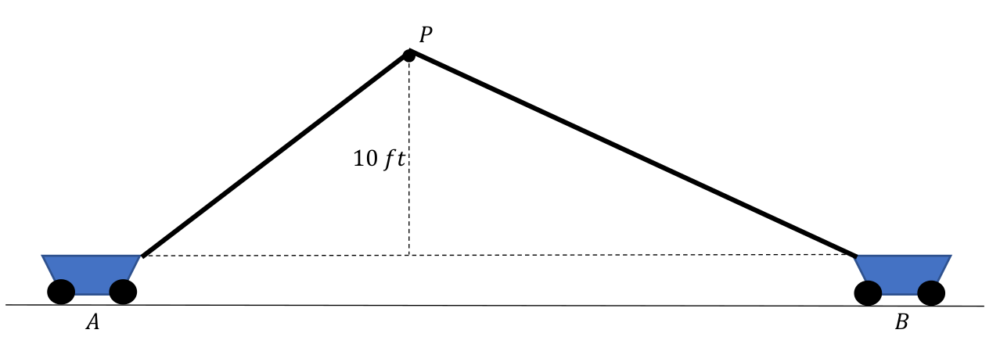
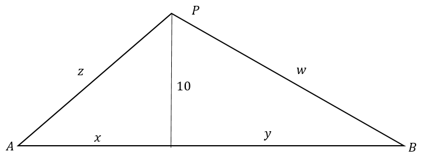
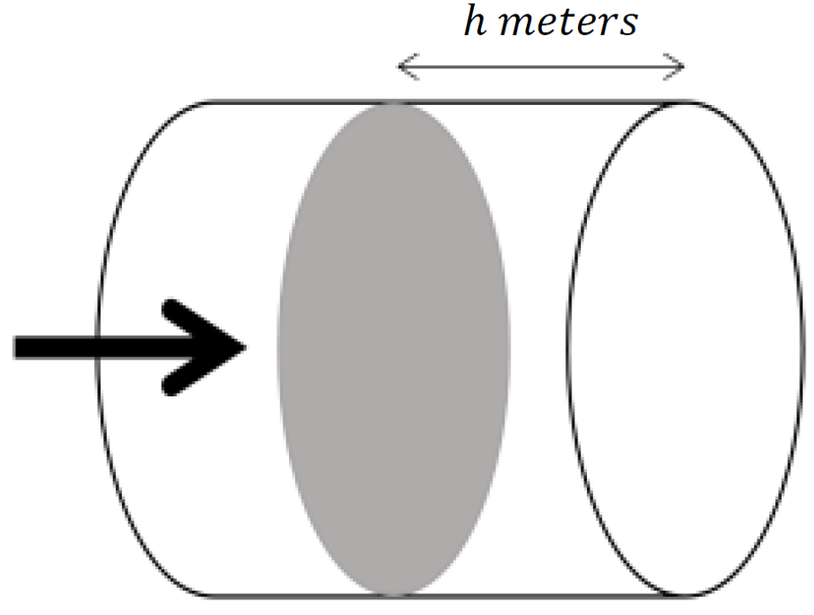

Section 5.8 Newton’s Method of Fluxions
The method of Fluxions is the general key by help whereof the modern mathematicians unlock the secrets of Geometry, and consequently of Nature.
―George Berkeley, from The Analyst (1685-1753)
Through experimentation Galileo had accurately described the motion of objects falling near the surface of the earth. At about the same time
Johannes Kepler (1571–1630) had accurately described the motion of the planets by analyzing the vast catalog of astronomical observation made by
Tycho Brahe (1546–1601). But these two descriptions of motion did not appear to be related.
It was left to Newton to unify them, but the mathematics to do this did not exist at the time. So he invented Calculus, which he called
The Method of Fluxions. Galileo studied motion on the surface of the Earth. Kepler studied the motion of the planets, but the underlying theme for both was motion.
For Newton everything was in motion. When he used the variable
\(x\) he thought of it as representing something “flowing in time†(moving). Such quantities he called
fluents, from
fluere, the Latin word which means “to flow.†As he put it himself in his book
Quadratura Curvarum (
On the Quadrature of Curves),
I sought a method of determining quantities from the velocities of the motions or [of the] increments, with which they are generated; and calling these velocities of the motions, or [of the] increments, fluxions, and generated quantities fluents, I fell by degrees, in the years \(1665\) and \(1666\text{,}\) upon the method of fluxions, which I have made use of here in the quadrature of curves.
For a given fluent \(x\text{,}\) Newton used the “dotted letter,†\(\dot{x}\text{,}\) to refer to its instantaneous velocity or fluxion. Whereas for Leibniz the static differential was the fundamental concept, for Newton the dynamic fluxion (velocity) was fundamental. On the surface fluxions seem quite different from differentials.
In Newton’s view the only independent variable is time. So all fluxions were velocities, or rates of change with respect to time. To see how fluxions are connected to the differential ratios we’ve been using, we need only ask ourselves how Leibniz would express the fluxion, \(\dot{x}\text{,}\) of the fluent, \(x\text{.}\) In Leibniz’ notation the rate of change of \(x\) with respect to \(t\) is the differential ratio \(\dfdx{x}{t}\text{.}\) Since Newton defines \(\dot{x}\) to be the rate of change of \(x\) with respect to (\(t\))ime (velocity),
\begin{equation*}
\dot{x} = \dfdx{x}{t}.
\end{equation*}
From Newton’s point of view differentiating the spatial coordinate \(y\) with respect to the spatial coordinate \(x\) to get \(\dfdx{y}{x}\) is simply not meaningful. On the other hand, if \(P=(x,y)\) is a point moving along some curve in the plane then both \(x\) and \(y\) are fluents with corresponding fluxions \(\dot{y}\) and \(\dot{x}\text{.}\)
What Leibniz’s notation expresses as \(\dfdx{y}{x}\text{,}\) Newton’s notation expresses as \(\frac{\dot{y}}{\dot{x}}\text{.}\) But they are the same thing. since
\begin{equation*}
\frac{\dot{y}}{\dot{x}} = \frac{\dfdx{y}{t}}{\dfdx{x}{t}}=
\frac{\dx{y}}{\cancel{\dx{t}}}\frac{\cancel{\dx{t}}}{\dx{x}}=\dfdx{y}{x}.
\end{equation*}
Although the two formulations are equivalent, Leibniz’ notation has become dominant in mathematics. But in fields where velocity is a fundamental concept, like physics and engineering, Newton’s dot notation is often still used. For example, suppose we are considering a point \(P\) on the curve \(y=x^2\) and we want the slope of the curve at \(P\text{.}\) Using our differentiation rules, we have
\begin{equation*}
\dx{y}=2x\dx{x}.
\end{equation*}
To get the slope, we divide by \(d{x}\) to get
\begin{equation*}
\dfdx{y}{x}=2x.
\end{equation*}
Using his Method of Fluxions, Newton would have considered both \(x\) and \(y\) to be fluents and \(P=(x,y)\) to be a point moving along a curve. His version of Calculus would have started with the same governing equation \(y=x^2\) and determined that their fluxions were related by the equation
\begin{equation*}
\dot{y}=2x\dot{x}.
\end{equation*}
To get the slope of the curve \(y=x^2\text{,}\) we simply need to recognize that this is the same as
\begin{equation*}
\frac{\dot{y}}{\dot{x}}=2x=\frac{\dfdx{y}{t}}{\dfdx{x}{t}}=\dfdx{y}{x}.
\end{equation*}
Although Newton’s dot notation has fallen out of favor in mathematics you will likely see it being used in your physics or engineering courses. (if you take any). We would be remiss if we failed to recognize this fact. So when appropriate, we will sometimes couch our problems in the dynamical language and dot notation of Newton. We will even sometimes refer to the derivatives $\dfdx{y}{t}$, or $\dfdx{x}{t}$ as fluxions. After all when $t$ represents time that’s what they are. Only the notation has changed.
If you prefer the Leibnizian terms and notation it is easy to translate between Newton and Leibniz. If $x$ is changing in time then $\dot{x}=\dfdx{x}{t}$ is the fluxion of $x$.
Problem 5.8.0.1.
For each of the following equations, find an equation relating their differentials and use this to relate their fluxions (instantaneous rates of change with respect to time).
(a)
\(\displaystyle xy^2-7x+\frac{y}{x}=1\)
(b)
\(\displaystyle x^{\frac12}+y^{\frac12}=1\) %
(c)
\(\displaystyle \frac{x^2+y}{\sqrt{y}+3x}=x+7\)
(d)
\(\displaystyle \frac{y}{x}=z^2\)
(e)
\(\displaystyle \sqrt{z^3}=x^2+y^2\)
(f)
\(\displaystyle xyz=1\)
Example 5.8.0.2. height=1.6in,width=4in.
Consider two carts joined by a \(100\) foot length of rope passing through a pulley \(P\text{,}\) which is held at a fixed height of \(10\) feet above where the rope attaches to the carts.

Suppose cart \(A\) is being pulled to the left at a constant speed of \(1 \frac{\text{ foot}}{\text{second}}.\)
Problem 5.8.0.3.
Make a guess: Is cart \(B\) moving at a constant speed?
Let’s check your guess. The general approach is to find the relationships between all of the fluents involved then differentiate and divide by \(\dx{t}\) to see how their fluxions are related. Below we have redrawn the essential features of the problem schematically and labeled all of the fluents.

We have the following relationships between the fluents:
\begin{equation*}
x^2+10^2=z^2,\hskip3 mm y^2+10^2=w^2,\text{ and } z+w=100.
\end{equation*}
Drill 5.8.0.4.
(a)
Differentiate the above equations to obtain relationships between the differentials \(\dx{x}\text{,}\) \(\dx{y}\text{,}\) \(\dx{z}\text{,}\) and \(\dx{w}\text{.}\)
(b)
Determine the relationship between the fluxions \(\dfdx{x}{t}\) and \(\dfdx{y}{t}\text{.}\) Recall that \(\dfdx{x}{t}=1\frac{\text{ foot}}{\text{second}}\text{.}\) Is \(\dfdx{y}{t}\) constant? How does this compare with your guess earlier?
(c)
Translate your solution into Newton’s dot notation.
Drill 5.8.0.5.
(a)
In the following diagram suppose the point \(P\) is moving on the \(x\)–axis from left to right with horizontal velocity \(\dfdx{x}{t} = 1 \frac{\text{ unit}}{\text{second}}\text{.}\)
Find the distance, \(D\) from \(A\) to \(P\) to \(B\) as a single function of \(x\) and use this to compute
\begin{equation*}
\eval{\dfdx{D}{t}}{\dfdx{x}{t}}{1}.
\end{equation*}
(b)
As an alternative approach, we re–label the diagram as follows:
Define \(D=z+w.\) From this diagram we have
\begin{align*}
w^2\amp{}=9+y^2,\\
5\amp{}=x+y, \text{ and}\\
z^2\amp{}= 1+x^2.
\end{align*}
(c)
Differentiate each of these equations and use the results to show that
\begin{equation*}
\dx{D}=\left(\frac{x}{z}-\frac{y}{w}\right)\dx{x}.
\end{equation*}
(d)
Compute \(\eval{\dfdx{D}{t}}{x}{1}\text{.}\)
Drill 5.8.0.5 demonstrates that you have alternatives. Try to avoid getting locked in to a single solution scheme. One alternative is to try to determine a single function of a single variable before differentiating. At the other extreme we can just assign variable names to all of the important quantities in our problem and differentiate the equations relating these variables.
The best approach will depend upon the problem. In fact, most of the time you’ll find yourself using a mixture of the two. Keep in mind that it is always good to have alternatives.
Drill 5.8.0.6.
(a)
Suppose the length of a rectangle is increasing at a rate of \(1 \frac{\text{ unit}}{\text{second}}\) and the width is decreasing at a rate of \(1 \frac{\text{unit}}{\text{second}}\text{.}\) Make a guess: Will the area remain constant?
(b)
Let the length be denoted by the fluent \(L\) and the width denoted by the fluent \(W\text{.}\) The fluxions of \(L\) and \(W\) are \(\dfdx{L}{t}=1\) and \(\dfdx{W}{t}=-1\text{,}\) respectively. Let \(A\) denote the area of the rectangle and compute the fluxion \(\dfdx{A}{t}\text{.}\)
(c)
How does your solution in part (b) compare to your guess in part (a)?
(d)
Translate your solution into Newton’s dot notation.
Problem 5.8.0.7.
The sketch above represents a \(15\) foot long ladder leaning against a vertical wall. Suppose that the bottom is sliding to the right at a constant rate.
(a)
Make a guess: Is the top sliding down at a constant rate?
(b)
Find \(\dfdx{a}{t}\) in terms of \(\dfdx{b}{t}\text{,}\) and use this to check your guess in part (a).
(c)
Translate your solution into Newton’s dot notation.
Problem 5.8.0.8.
Suppose that at a certain instant of time the price of a certain commodity is increasing at a rate of \(5\)% per month and the quantity sold is decreasing at a rate of \(3\)% per month. Would the revenue increase at a rate of \(2\)% per month? Explain.
Problem 5.8.0.9.
The strength of a signal from a cell tower, measured in decibels is inversely proportional to the square of the distance between the tower and the cell phone. Suppose you have a \(200\) foot tall cell tower and a car driving away from the tower at a rate of \(100 \frac{\text{
ft}}{\text{second}}\) (approximately \(68\) mph). (The icon on your cell phone probably uses bars, but there is no universally agreed upon standard for what “one bar†means. There is a standard for decibels.)
(a)
Find a formula for the rate at which the signal is decreasing in terms of the distance \(x\) from the car to the base of the tower. (We suggest that you use \(k\) to denote the constant of proportionality.)
(b)
Plot a graph of the formula in part (a) with \(x \ge 0\) and use this to approximate the distance from the base of the tower where the signal decreases fastest. (Use \(k = 1000000\text{.}\) You’ll see why we chose this scale once you’ve plotted it.)
(c)
Based on the graph, what is happening to the rate at which the signal is decreasing as the car moves farther away from the tower?
Problem 5.8.0.10.
It is reasonable to assume that the rate at which the volume of a spherical raindrop is increasing as it forms is proportional to the surface area of the raindrop. Show that under this assumption, the radius (surprisingly?) grows at a constant rate.
Problem 5.8.0.11.
Suppose we have a rectangular box whose length is increasing by \(3 \frac{\text{centimeters}}{\text{second}}\text{,}\) whose width is increasing by \(2 \frac{\text{centimeters}}{\text{second}}\) and whose height is decreasing by \(3 \frac{\text{centimeters}}{\text{second}}\text{.}\) How fast are the volume and surface area of the box changing when the length is \(25\) centimeters, width is \(20\) centimeters, and height is \(10\) centimeters? Are they increasing or decreasing?
Problem 5.8.0.12.
Suppose a point \(P\) is moving along the curve \(y=x^2\) so that its horizontal velocity is \(\dfdx{x}{t}=1\frac{\text{ unit}}{\text{second}}\text{.}\) For which values of \(x\) is the distance from \(P\) to the point \((0,1)\) increasing and for what values is it decreasing? What can you say about the points where the distance transitions from increasing to decreasing or decreasing to increasing?
Problem 5.8.0.13.
The ideal gas law (
Boyle’s Law) states that the pressure
\(P\) (in Pascals), volume
\(V\) (in cubic meters), and temperature
\(T\) (in degrees)
Kelvin) of an ideal gas are related by the formula
\(PV=kNT\) where
\(N\) is the number of gas molecules and
\(k\) is the
Boltzmann constant. What this says is that for a fixed amount of gas, if the volume is held fixed, then the pressure is proportional to the temperature and if the temperature is held fixed, then the pressure is inversely proportional to the volume.
(a)
Assuming that we have an enclosed gas, and that \(N\) is held constant. Find an equation that relates \(\dx{P}\text{,}\) \(\dx{V}\text{,}\) and \(\dx{T}\text{,}\) and use this to find \(\dfdx{T}{t}\) in terms of \(\dfdx{P}{t}\) and \(\dfdx{V}{t}\text{.}\)
(b)
Suppose we have a piston compressing the gas in a cylinder as in the following sketch.

Show that for the pressure to be held fixed \(\dfdx{T}{t}\) must satisfy
\begin{equation*}
\dfdx{T}{t} = \frac{T}{h}\dfdx{h}{t}.
\end{equation*}
(Notice that this is independent of the radius of the cylinder.)
(c)
Suppose that when \(h=0.2\) meters the temperature is \(300^\circ K\text{.}\) If the piston is moving to the right at a rate of \(0.001 \frac{\text{meters}}{\text{second}}\text{,}\) how fast should the temperature be decreasing at that instant to maintain a constant pressure?
Problem 5.8.0.14.
A streetlamp is mounted at the top of a \(20\) foot pole. A \(6\) foot tall person is walking away from the base of the pole at a constant speed.
(a)
Make a guess: Is the length of this person’s shadow increasing at a constant rate?
(b)
Now compute the rate at which the person’s shadow is increasing.
Problem 5.8.0.15.
Suppose the position of a point, \(P_x\text{,}\) on the \(x\)-axis is given by \((x(t),0)\) and the position of another point, \(P_y\text{,}\) on the \(y\)-axis is given by \((0,y(t))\text{.}\) Let \(S(t)\) represent the distance between \(P_x\) and \(P_y\text{.}\)
(a)
If \(x(t)=t\text{,}\) and \(y(t)=t\) show that \(\dfdx{S}{t}=\sqrt{2}\text{.}\)
If \(x(t)=2t\text{,}\) and \(y(t)=2t\) show that \(\dfdx{S}{t}=\sqrt{8}\text{.}\)
If \(x(t)=t\text{,}\) and \(y(t)=3t\) show that \(\dfdx{S}{t}=\sqrt{10}\text{.}\)
If \(x(t)=5t\text{,}\) and \(y(t)=3t\) show that \(\dfdx{S}{t}=\sqrt{34}\text{.}\)
Do you see a pattern yet? If you do, write it down and try to show that it always holds. If you don’t, make up some more simple examples and solve them to gather more evidence. when you believe you have see it conjecture a pattern and then show that the pattern always holds.
(b)
Show that if \(x(t)=t^{\frac12}\text{,}\) and \(y(t)=t^{\frac12}\) then \(\displaystyle\dfdx{S}{t}=\frac{1}{\sqrt{2t}}\text{.}\) Does this make intuitive sense to you?
Show that if \(x(t)=t^{\frac13}\text{,}\) and \(y(t)=t^{\frac13}\text{,}\) then \(\displaystyle\dfdx{S}{t}=\frac{\sqrt{2}}{3\sqrt[3]{t^2}}\text{.}\)
Show that if \(x(t)=t^{\frac14}\text{,}\) and \(y(t)=t^{\frac14}\text{,}\) then \(\displaystyle\dfdx{S}{t}=\frac{\sqrt{2}}{4\sqrt[4]{t^3}}\text{.}\)
Do you see a pattern yet? If you do, write it down and try to show that it always holds. If you don’t make up some more, simple examples, and solve them to gather more evidence. when you believe you have see it conjecture a pattern and then show that the pattern always holds.
(c)
Finally, given any \(x(t)\) and any \(y(t)\text{,}\) find a completely general formula for \(\dfdx{S}{t}\text{.}\)